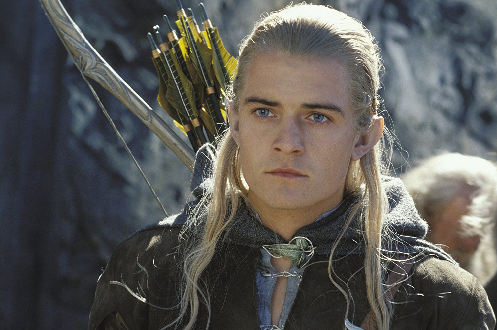

Ле́голас (англ. Legolas) — эльф из Синдар, сын Трандуиля, короля лесных эльфов Северного Лихолесья. Один из девяти членов Братства Кольца, участвовавший в походе к Роковой горе и в Войне Кольца. Будучи единственным эльфом в рядах Братства, Леголас сдружился с гномом Гимли, что было примечательно для обоих народов.
Леголас, 3019 год Т.Э.
Образование имени
Леголас родом из Серых эльфов, но его имя принадлежит к Лесным эльфам. «Леголас» – диалектная форма. На правильном синдарине его имя будет звучать как «Лаэголас» («Laegolas»), а на квэнья – «Лайквалассэ». Как говорил сам Толкин, это очень подходящее имя для лесного эльфа. Само по себе имя состоит из двух частей: «лаэг» (в диалекте Сумеречья – «лег») – зеленый и «голас» («олас») – «листва».
Характеристика
Был единственным представителем эльфов в Братстве Кольца. Не выносил табачного дыма — это стало известно, когда Арагорн, Гимли, Мерри и Пиппин закурили, а Леголас вышел наружу. За время путешествия Братства Леголас особенно сдружился с гномом Гимли, и эта дружба удивляла многих. Также Леголас был другом Арагорну и спас его в битве при Хорнбурге. Острый глаз Леголаса и его мастерство в обращении с луком оказали неоценимую помощь в походе. Известно, что он неплохо управлялся с гребной лодкой во время путешествия Братства по Андуину. Несмотря на то, что Леголас — лесной эльф, он отличный кавалерист и, как все эльфы, ездит без стремян и седла. Когда роханский конь Арод в страхе не хотел ступать на Тропу Мертвецов, Леголас произнёс несколько слов, которые его успокоили.
Внешность
Леголас был высоким и гибким. Он носил одежды зелёных и коричневых цветов, что соответствует описаниям эльфов Лихолесья в «Хоббите». Обувь его была лёгкой и кожаной. Точный цвет волос Леголаса неизвестен, хотя его отец, Трандуиль, был золотоволосым (впрочем, если скрупулезно изучить этот вопрос, то можно прийти к выводу, что он, вероятней всего, был темноволосым, чем нет). Леголас отличался неутомимостью и зоркостью более кого-либо в Братстве. Глубокий снег не проваливался под его лёгкой поступью.
Леголас против Мумакила, битва на Пеленнорских полях